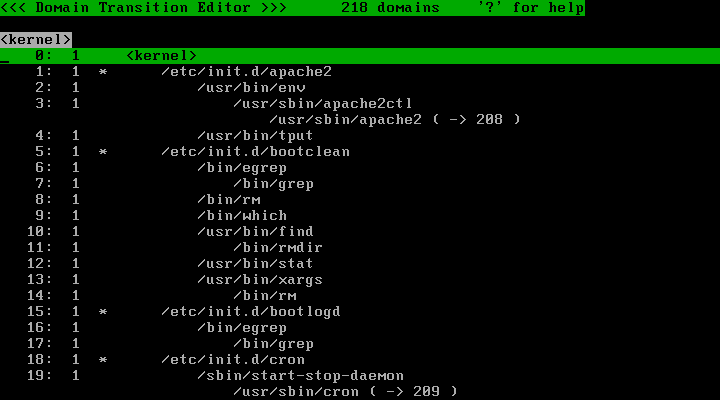
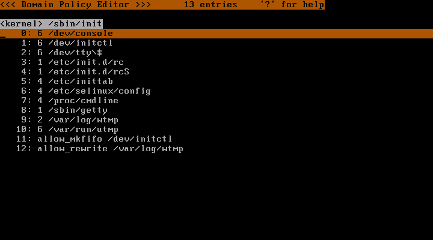
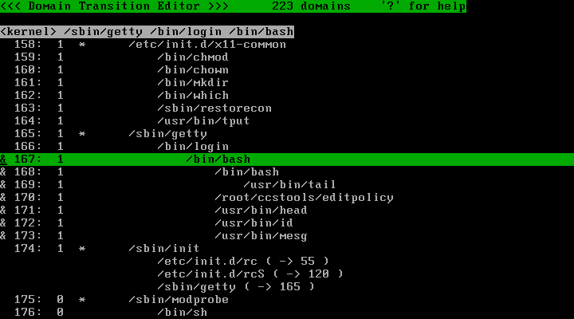
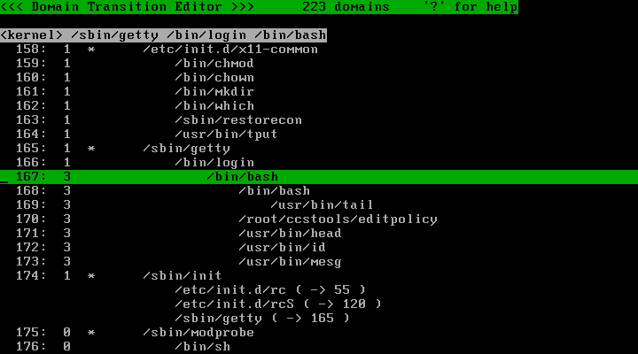

Info: Version 2.2.x is available.
Last modified: $Date$
TOMOYO Linux 2.1 は、カーネル 2.6.8 から 2.6.23 に対応しています。カーネルソースをダウンロードして展開してください。
以下の手順は subversion や quilt 等をインストールしていない場合の手順です。 subversion や quilt 等を使用されている方はこの手順どおりに実行する必要はありません。
$ wget http://www2.kernel.org/pub/linux/kernel/v2.6/linux-2.6.23.14.tar.bz2 $ tar -jxf linux-2.6.23.14.tar.bz2 $ cd linux-2.6.23.14
最新版のパッチは http://osdn.dl.sourceforge.jp/tomoyo/28120/ からダウンロードできます。パッチをダウンロードして、カーネルソースディレクトリに展開してから適用します。
$ wget http://osdn.dl.sourceforge.jp/tomoyo/28120/tomoyo-lsm-2.1.1-20071123.tar.gz $ tar -zxvf tomoyo-lsm-2.1.1-20071123.tar.gz $ /bin/sh -c 'for i in `cat patches/series`; do patch -p1 < patches/$i; done'
必要であれば Makefile の EXTRAVERSION= を編集してください。
次に、 TOMOYO Linux を有効にしたカーネルコンフィグを作成します。
$ make -s menuconfig
Security options の画面に移動して、以下のように "Default Linux Capabilities", "Root Plug Support", "NSA SELinux Support" の選択を解除し、 "TOMOYO Linux support" を選択してください。
[*] Enable different security models < > Default Linux Capabilities < > Root Plug Support [ ] NSA SELinux Support [*] TOMOYO Linux support
カーネルコンフィグの作成が終わったら、カーネルをコンパイルしてください。
$ make -s # make -s modules_install install
必要であれば initrd を作成してください。さらに、必要であれば /boot/grub/grub.conf または /boot/grub/menu.lst を編集してください。
TOMOYO Linux 2.1 で使用するツールは http://osdn.dl.sourceforge.jp/tomoyo/27220/ccs-tools-1.5.2-20071205.tar.gz からダウンロードできます。以下のようにダウンロードして展開後、コンパイルしてください。ツールは/usr/lib/ccsにインストールされます。
$ wget http://osdn.dl.sourceforge.jp/tomoyo/27220/ccs-tools-1.5.2-20071205.tar.gz $ tar -zxf ccs-tools-1.5.2-20071205.tar.gz $ cd ccstools $ make # make install
基本設定を自動でおこなうスクリプト tomoyo_init_policy.sh がツール群には含まれていますので、これを実行します。
# /usr/lib/ccs/tomoyo_init_policy.sh
これで、 /etc/tomoyo/ ディレクトリに基本的な設定が生成されます。
以上の設定でTOMOYO Linuxを使用できる状態になっていますが、このチュートリアルではさらに、システム全体の挙動を学習させる設定を行っておきます。
# echo '<kernel>' > /etc/tomoyo/domain_policy.conf # echo 'use_profile 1' >> /etc/tomoyo/domain_policy.conf
TOMOYO Linux カーネルで起動して、ログインしてrootユーザになり、TOMOYO Linuxツール群に同梱されているeditpolicyコマンドを実行してみてください。
# /usr/lib/ccs/editpolicy

editpolicyコマンドはTOMOYO Linuxのポリシーを閲覧、編集するためのCUIのツールです。起動した直後は現在までに生成されたドメインが表示されています。<kernel>を基点として、execveによるプロセスの起動のたびに新たなドメインが生成されています。
ドメインの左側、行番号の右側には、今すべて1という数字が表示されています。この数字は「プロファイル番号」と呼ばれる値で、ドメインが使用するプロファイルをあらわしています。プロファイルはTOMOYO Linuxのアクセス制御レベルを組にしたモノで、/etc/tomoyo/profile.confで指定した内容がLinuxの起動時に/sys/kernel/security/tomoyo/profileに読み込まれています。
tomoyo_init_policy.shによって、以下の4つのプロファイルが自動的に生成されています。プロファイルはドメインに割り当てて使用します。
適当なドメインにカーソルを移動させ、Enterキーを押すことで学習されたアクセス許可を閲覧できます。

システム起動時から学習されたポリシーを、editpolicyで適当にブラウズしてみてください。どのプログラムがどのファイルにアクセスしたかがひと目で見て取ることができます。
editpolicyの基本的な使い方はこのチュートリアルで紹介しますが、詳しい使い方は ポリシーエディタの使い方 をご覧ください。
editpolicyを終了するには[Q]を押します。
この状態ですでに、ログインシェルの動作は学習されるようになっています。ためしに以下のコマンドを入力してみてください。
# head /etc/passwd # bash # tail /etc/mtab # exit
通常のLinuxとまったく同様に動作しますが、カーネルレベルではTOMOYO Linuxがアクセスを監視してポリシーを学習しています。
ここで再度editpolicyを起動して、ログインシェル以下のドメインを強制モードにしましょう。強制モードはプロファイル番号3です。まずは以下の操作で、ログインシェル以下のドメインをマークします。

マークが終わったら、[S] [3] [Enter]でマークしたドメインにプロファイル番号3を割り当てます。ログインシェル以降のドメインの左側の数字が3に変わったのを確認したら、[Q]でeditpolicyを終了してください。

この状態ではすでに、先ほど学習させた操作以外は拒否されるようになっています。[Q]で editpolicy を終了し、ためしにいくつかコマンドをたたいてみてください。
# head /etc/passwd # OK # head /etc/shadow # NG # rm -fr / # NG # tail /etc/mtab # NG # bash # OK # tail /etc/mtab # OK # head /etc/passwd # NG
先ほど学習させた操作以外は拒否されることが分かります。また、tail /etc/mtabは先ほど学習させた操作には含まれていますが、1段目のシェルでは実行できず、2段目のシェルで許可されます。これは、2つのシェルはプロセスの実行履歴、すなわちドメインが異なり、学習されたアクセス許可も異なるためです。
一通りの操作を試し終えたら、editpolicyでログインシェルのプロファイルを1に戻して次のチュートリアルに進んでください。
次に、Apacheの動作を学習してポリシーを編集してみます。Apacheがインストールされていない場合はインストールしてください。
Apacheであっても基本的な流れは先ほどのログイン後のコマンドと同じです。まず、editpolicyを起動してApacheのドメインを探し、プロファイル番号1を割り当てます。
editpolicyを[Q]で終了し、Apacheを再起動して再度editpolicyを起動し、Apacheドメインで[Enter]キーを押してください。Apacheの起動に必要なアクセスが学習されているはずです。
4 /etc/httpd/conf/httpd.conf allow_create /var/run/httpd.pid allow_unlink /var/run/httpd.pid allow_network TCP bind 192.168.1.135 80 allow_network TCP listen 192.168.1.135 80
学習された内容には、設定ファイルやモジュールの読み込みの他にも、自身のIPアドレスの80番ポートをbind, listenするネットワークアクセスも含まれているはずです。学習モードにした状態でさらに、WebブラウザでこのApacheへWebコンテンツを要求してみてください。
再度editpolicyでポリシーを読み込むと、Webコンテンツの読み込みの他に、クライアントからのネットワーク接続要求のacceptが学習されています。
4 /var/www/html/index.html allow_network TCP accept 192.168.1.1 2389
Webコンテンツは全てのファイルを書き出すよりも、パターンを使ったほうが簡単にポリシーを記述できます（使用できるパターンの詳細は TOMOYO Linux ポリシー解説書 をご覧ください）。また、接続要求はいつも同じIPアドレス、同じポート番号とは限らないため、ある程度の幅を指定する必要があります。
このような柔軟なポリシーは、以下のように記述できます。
4 /var/www/\* 4 /var/www/\*/\* 4 /var/www/\*/\*/\* 4 /var/www/\*/\*/\*/\* 4 /var/www/\*/\*/\*/\*/\* allow_network TCP accept 192.168.0.0-192.168.255.255 1024-65535
\*は、「/を含まない全ての文字列」をあらわします。editpolicyでエントリを追加するには、[A]を押して出る1行入力にアクセス許可の内容を入力して[Enter]キーを押します。
上記のパターンや範囲指定をそのままドメインごとのアクセス許可に書くこともできますし、それをまとめたグループを定義してさらに簡潔に記述することもできます。
editpolicyで[Tab]を2回押して、"Exception Policy Editor"を表示させてください。アクセス許可の追加と同様に、[A]を押して以下のエントリを追加してください。
path_group WEB_CONTENTS /var/www/\* path_group WEB_CONTENTS /var/www/\*/\* path_group WEB_CONTENTS /var/www/\*/\*/\* path_group WEB_CONTENTS /var/www/\*/\*/\*/\* path_group WEB_CONTENTS /var/www/\*/\*/\*/\*/\* address_group PRIVATE_IP 192.168.0.0-192.168.255.255
追加が終わったら[Tab]を1回押して"Domain Transition Editor"に戻り、Apacheのドメインの内容を再度表示させて、以下のエントリを追加してください。
4 @WEB_CONTENTS allow_network TCP accept @PRIVATE_IP 1024-65535
このように、path_groupとaddress_groupを用いることで、先ほどと同じ内容をより簡潔に記述できます。